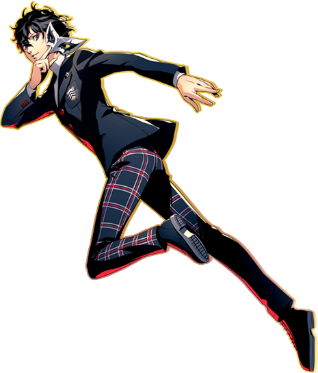
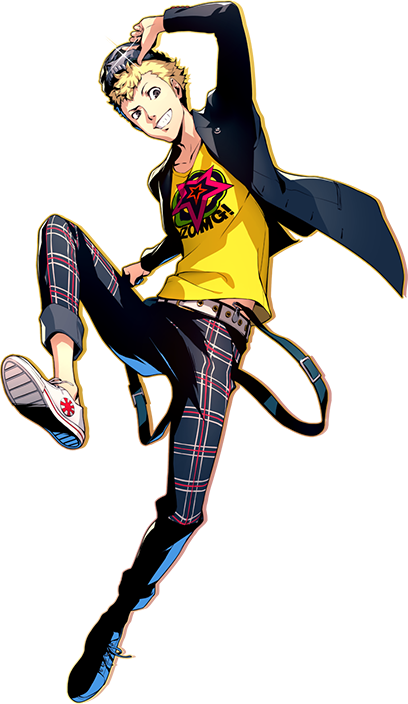
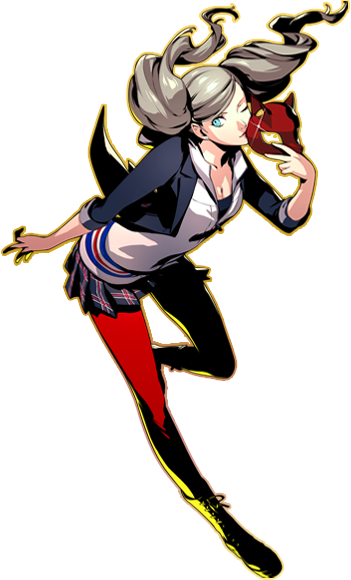
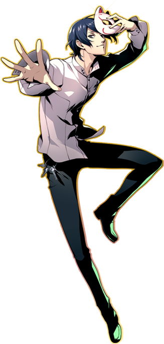
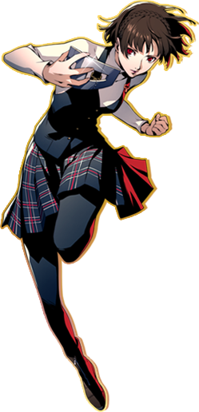
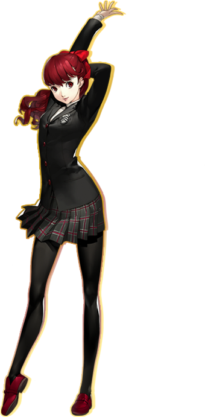
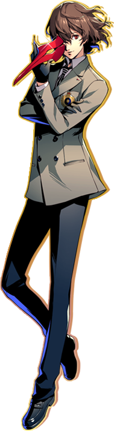

Protagonist
Persona: Arsène
The silent protagonist and leader of the team. A transfer student with a record, he can wield multiple Personas and is the heart of the group.

Persona: Arsène
The silent protagonist and leader of the team. A transfer student with a record, he can wield multiple Personas and is the heart of the group.

Persona: Captain Kidd
Joker's first friend at Shujin Academy. Loud, loyal and impulsive, he fights with blunt weapons and heavy physical attacks.

Persona: Zorro
A mysterious cat-like creature who guides the team through the Metaverse. Proud and clever, he specializes in wind magic and healing.

Persona: Carmen
A fashion model and Joker's classmate. Kind and determined, she uses fire magic and whips.

Persona: Goemon
A gifted art student with an unusual way of seeing the world. He fights with a katana and ice magic.

Persona: Johanna
The student council president. Disciplined and sharp, she is the team's strategist and fights with nuclear magic and a gun.

Persona: Prometheus
A genius hacker who provides navigation and support from the back line. She scans enemies and reveals their weaknesses.

Persona: Milady
A gentle, elegant student with a strong will. She fights with an axe and a gun, and is skilled at inflicting status effects.

Persona: Cendrillon
A cheerful gymnast who joins the team in the Royal edition. Her role is closely tied to the new story content.

Persona: Robin Hood
A famous teenage detective who appears in the media as a rival to the Phantom Thieves. His role is best discovered while playing.

The owner of Café LeBlanc and Joker's guardian. Gruff on the outside, he becomes a father figure over time.

Joker's homeroom teacher at Shujin Academy, who hides a secret job to make ends meet.

The strange master of the Velvet Room, who guides Joker in the use of his Personas.

An assistant in the Velvet Room who helps Joker fuse and manage his Personas.

A school counselor and new character in the Royal edition, who offers help to troubled students.